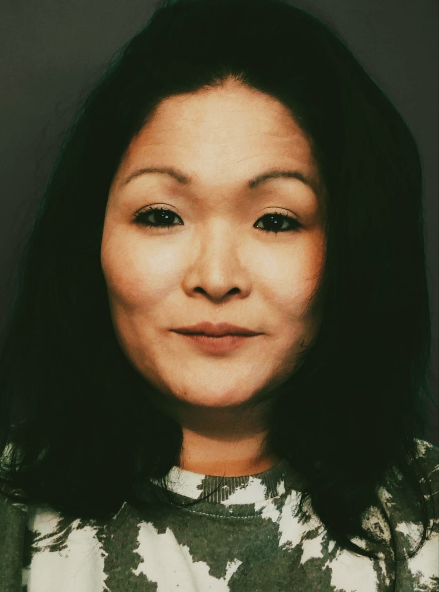

vendredi 17h00 a 18h00
gymnase Ignace Heinrich
La K-pop est un art coréen porté par de la musique pop accompagnée de chorégraphies calibrées au millimètre,
interprété par des chanteurs séduisants, à la pointe de la mode.
Delphine
Je suis une Coréenne adoptée qui pratique la danse classique, le modern jazz et le street dance depuis l'âge de cinq ans.
Mon parcours artistique riche et varié m'a conduit à enseigner l'expression corporelle et le théâtre, grâce à ma formation de scénariste et réalisatrice. Avant même de considérer le DE, on m'a proposé des opportunités professionnelles, et mon diplôme fédéral d'initiatrice en patinage artistique m'a permis d'encadrer des groupes d'enfants.
En explorant mes racines coréennes, j'ai été captivée par la K-Pop et ses chorégraphies précises, une véritable révélation pour moi!
Cette passion m'a poussé à suivre une formation en ligne en danse K-Pop, une option innovante en France, surtout en période de COVID.
Aujourd'hui, je propose des cours de K-Pop, une rareté dans notre département. Mes cours, enrichis par mon expérience de danseuse, incluent des bases de hip-hop, des exercices d'isolation et de bras, des étirements pour la posture, du cardio, et l'apprentissage de chorégraphies.
Chaque mois, je change de chorégraphie, alternant entre groupes masculins et féminins, pour offrir à mes élèves une vision complète de l'univers de la danse K-Pop.
Voici un aperçu de mon parcours et de mon engagement passionné dans l'enseignement de la danse.